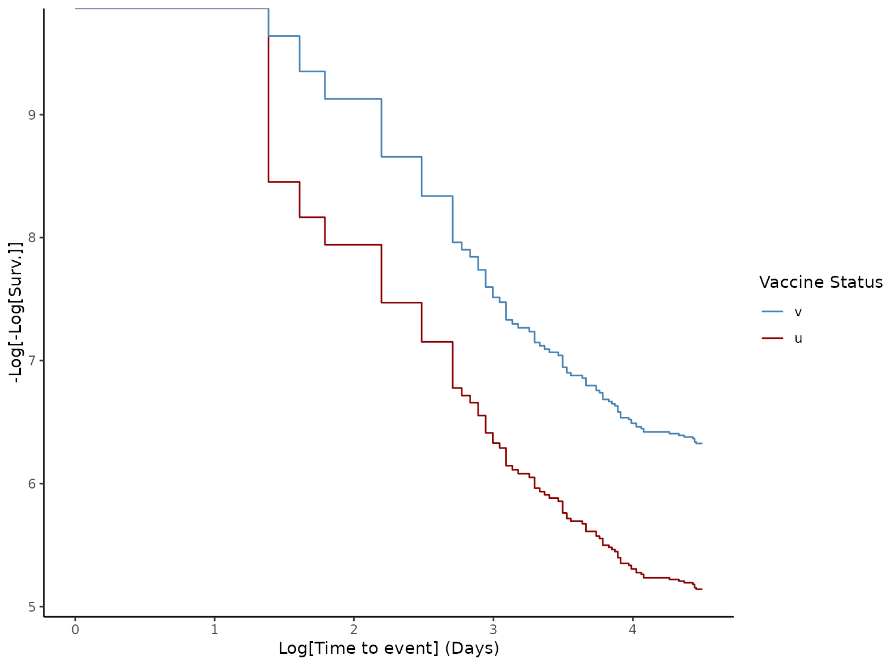

This function provides methods for estimating VE. It relies on
the Kaplan-Meier estimator and the Cox model for proportional hazards
from the {survival} package. Currently, the default method is VE = 1 - HR,
where HR is the Hazard Ratio calculated using the Cox model. The
proportional hazards assumption is tested using the Schoenfeld test,
with the p-value provided in the results. Log-log plots are also generated
using the Kaplan-Meier estimator for a visual test of the proportional
hazards hypothesis. The function uses column names provided in the tags
outcome_status_col, time_to_event_col, and vaccine_status_col of the
linelist object and status names from make_vaccineff_data.
The return is an S3 class object with the VE (CI95%), results from the Cox
model, and the Kaplan-Meier estimator. This object is compatible with
summary and plot methods.
Value
Object of the class vaccineff: a list with results from the
estimation of VE.
ve: data.frame with VE(CI95%)
cox_model: survival object with Cox model results
kaplan_meier: survival object with Kaplan-Meier estimator
Examples
# \donttest{
# Load example data
data("cohortdata")
# Create `vaccineff_data`
vaccineff_data <- make_vaccineff_data(data_set = cohortdata,
outcome_date_col = "death_date",
censoring_date_col = "death_other_causes",
vacc_date_col = "vaccine_date_2",
vaccinated_status = "v",
unvaccinated_status = "u",
immunization_delay = 15,
end_cohort = as.Date("2044-12-31"),
match = TRUE,
exact = c("age", "sex"),
nearest = NULL
)
# Estimate the Vaccine Effectiveness (VE)
ve <- estimate_vaccineff(vaccineff_data, 90)
# Print summary of VE
summary(ve)
#> Vaccine Effectiveness at 90 days computed as VE = 1 - HR:
#> VE lower.95 upper.95
#> 0.6939 0.4882 0.8169
#>
#> Schoenfeld test for Proportional Hazards assumption:
#> p-value = 0.0274
#> Warning:
#> p-value < 0.05. Please check loglog plot for Proportional Hazards assumption
# Generate loglog plot to check proportional hazards
plot(ve, type = "loglog")

# Generate Survival plot
plot(ve, type = "surv", percentage = FALSE, cumulative = FALSE)
 # }
# }